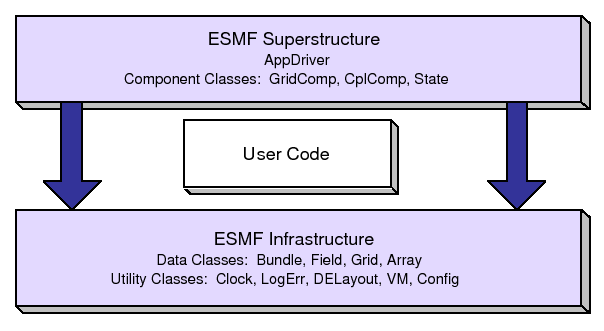

The Earth System Modeling Framework (ESMF) is a suite of software tools for developing high-performance, multi-component Earth science modeling applications. Such applications may include a few or dozens of components representing atmospheric, oceanic, terrestrial, or other physical domains, and their constituent processes (dynamical, chemical, biological, etc.). Often these components are developed by different groups independently, and must be ``coupled'' together using software that transfers and transforms data among the components in order to form functional simulations.
ESMF supports the development of these complex applications in a number of ways. It introduces a set of simple, consistent component interfaces that apply to all types of components, including couplers themselves. These interfaces expose in an obvious way the inputs and outputs of each component. It offers a variety of data structures for transferring data between components, and libraries for regridding, time advancement, and other common modeling functions. Finally, it provides a growing set of tools for using metadata to describe components and their input and output fields. This capability is important because components that are self-describing can be integrated more easily into automated workflows, model and dataset distribution and analysis portals, and other emerging ``semantically enabled'' computational environments.
ESMF is not a single Earth system model into which all components must fit, and its distribution doesn't contain any scientific code. Rather it provides a way of structuring components so that they can be used in many different user-written applications and contexts with minimal code modification, and so they can be coupled together in new configurations with relative ease. The idea is to create many components across a broad community, and so to encourage new collaborations and combinations.
ESMF offers the flexibility needed by this diverse user base. It is tested nightly on more than two dozen platform/compiler combinations; can be run on one processor or thousands; supports shared and distributed memory programming models and a hybrid model; can run components sequentially (on all the same processors) or concurrently (on mutually exclusive processors); and supports single executable or multiple executable modes.
ESMF's generality and breadth of function can make it daunting for the novice user. To help users navigate the software, we try to apply consistent names and behavior throughout and to provide many examples. The large-scale structure of the software is straightforward. The utilities and data structures for building modeling components are called the ESMF infrastructure. The coupling interfaces and drivers are called the superstructure. User code sits between these two layers, making calls to the infrastructure libraries underneath and being scheduled and synchronized by the superstructure above. The configuration resembles a sandwich, as shown in Figure 1.
ESMF users may choose to extensively rewrite their codes to take advantage of the ESMF infrastructure, or they may decide to simply wrap their components in the ESMF superstructure in order to utilize framework coupling services. Either way, we encourage users to contact our support team if questions arise about how to best use the software, or how to structure their application. ESMF is more than software; it's a group of people dedicated to realizing the vision of a collaborative model development community that spans insitutional and national bounds.
ESMF has a complete set of Fortran interfaces and some C interfaces. This ESMF Reference Manual is a listing of ESMF interfaces for C.
Interfaces are grouped by class. A class is comprised of the data and methods for a specific concept like a physical field. Superstructure classes are listed first in this Manual, followed by infrastructure classes.
The major classes in the ESMF superstructure are Components, which usually represent large pieces of functionality such as atmosphere and ocean models, and States, which are the data structures used to transfer data between Components. There are both data structures and utilities in the ESMF infrastructure. Data structures include multi-dimensional Arrays, Fields that are comprised of an Array and a Grid, and collections of Arrays and Fields called ArrayBundles and FieldBundles, respectively. There are utility libraries for data decomposition and communications, time management, logging and error handling, and application configuration.
|  |